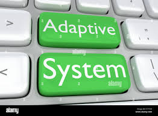
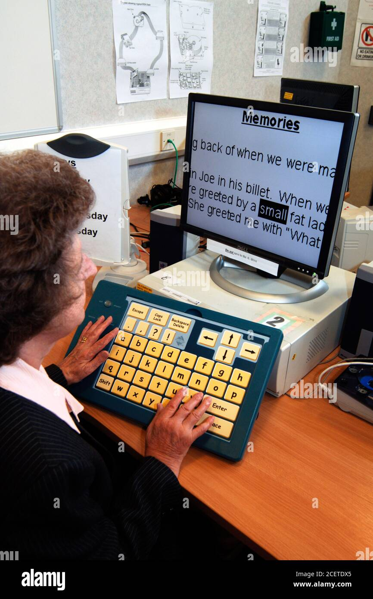
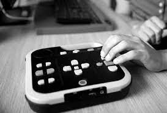

DEFINICIÓN
Es un teclado de conceptos que permite configurar el teclado mediante plantillas para adaptarse a las necesidades de cada usuario.
IntelliKeys USB se conecta a un puerto USB del ordenador y proporciona acceso a cualquier persona con discapacidad física, visual o cognitiva que tenga dificultades para utilizar un teclado estándar
CARACTERÍSTICAS
Aquí algunos ejemplos:



DISTRIBUIDORES
BJ Adapataciones es la única entidad española que reside en Barcelona que crean, producen y distribuyen tecnologías de soporte a la autonomía de personas con discapacidad y contribuyen a la mejora en la calidad de vida de las personas
Algunos de los productos que ofrecen son:

Puedes encontrar mas informacion sobre estos productos y este servicio en: BJ ADAPTACIONES